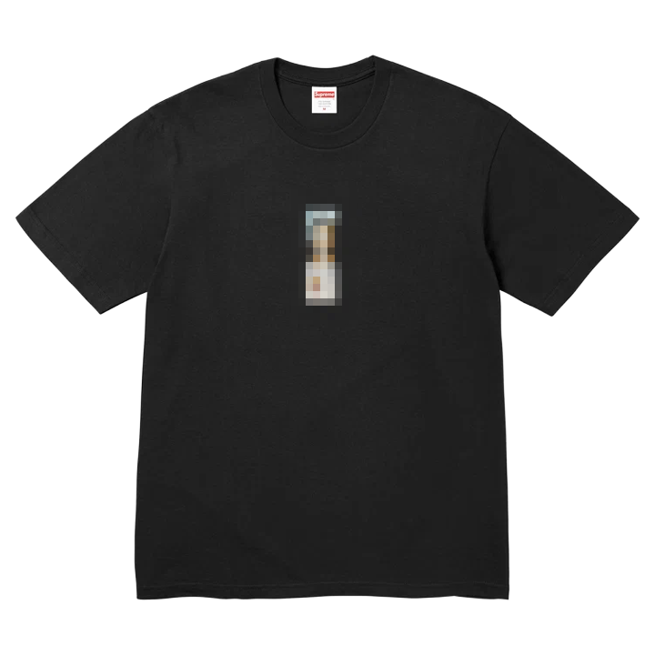

I love graphic shirts. I guess I would say I collect them though that wasn’t exactly intentional. I feel like they’re one of the easiest ways to express yourself. It’s a simple way to express your tastes, favorite music, hobbies, or just simply what you think looks cool. I also feel like when you wear something you love it can make you feel more confident. Even if no one notices that cool new shirt, it can still change the way you carry yourself that day. For me t-shirts are also an awesome medium of design. There aren’t many rules within the format of a shirt. There have been millions of different executions on the same blank canvas of a shirt. The design of a shirt is uniquely not stationary as well. It’s something that travels with you, allowing anyone you pass from day to day to see.
Is it a little too materialistic? Yes, of course. Am I guilty of buying a shirt just because of the brand name? Most definitely. A t-shirt can become a status symbol. I have definitely spent too much money on shirts just because they had the brand name I wanted to associate with on it. Is it the best passion? Probably not, but it is what it is.
(PRESS ADD TO CART)